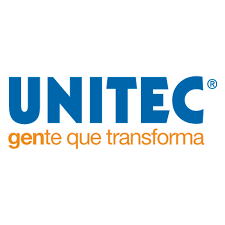

El diseño gráfico es una profesión cuya actividad consiste en concebir, organizar, proyectar y realizar comunicaciones visuales, producidas en general por medios industriales y destinadas a transmitir mensajes específicos a grupos sociales y con objetivos claros y determinados. Esta actividad posibilita comunicar gráficamente ideas, hechos y valores procesados y sintetizados en términos de forma y comunicación, factores sociales, culturales, económicos, estéticos y tecnológicos. También se conoce con el nombre de diseño en comunicación visual, debido a que algunos asocian la palabra gráfico únicamente a la industria gráfica, y entienden que los mensajes visuales se canalizan a través de muchos medios de comunicación, y no solo los impresos.
Universidad UNITEC

PLAN DE ESTUDIOS
Nuestros planes de estudio están diseñados para formar profesionistas de excelencia académica comprometidos con la sociedad. Es a través del conjunto de conocimientos prácticos y teóricos, como desarrollarás las aptitudes necesarias para abrirte las puertas al mercado laboral.
TELÉFONOS
01 800 7 864 832
CORREO ELECTRÓNICO Y PAGINA DE INTERNET
admisiones@unitec.mx
Da click aqui para ver mas informacion